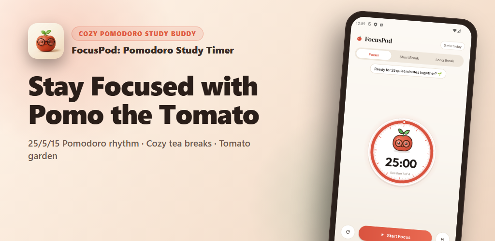

FocusPod: Pomodoro Study Timer
Cozy Pomodoro focus timer with Pomo the tomato buddy, tea breaks & daily garden.
Get it on Google Play →
Key Features
- Classic Pomodoro Rhythm: 25-minute Focus, 5-minute Short Break, and 15-minute Long Break modes with one-tap switching.
- Living Study Buddy: Pomo reacts to study mode, break tea time, and joyful taps for gentle emotional motivation.
- Daily Tomato Garden & Minutes Tracker: Watch your daily streak grow with visual tomato badges and total focused minutes.
- Gentle Completion Chime & Keep-Screen-On: Stay in flow without unlocking your phone constantly.
- Calm Warm Editorial Aesthetic: Soft linen tones engineered to reduce eye strain during long study sessions.
- 12 Languages Supported: Zero account required, works completely offline.
Frequently Asked Questions
Does FocusPod work offline without an account?
Yes! FocusPod works 100% offline with zero login required, saving your daily tomato streak locally on your phone.
What timer intervals does FocusPod include?
FocusPod includes classic 25-minute Focus sessions, 5-minute Short Breaks, and 15-minute Long Breaks with one-tap switching.
Will my screen turn off during a study session?
No, FocusPod gently keeps the screen awake while studying so you can glance at your timer and Pomo buddy anytime.